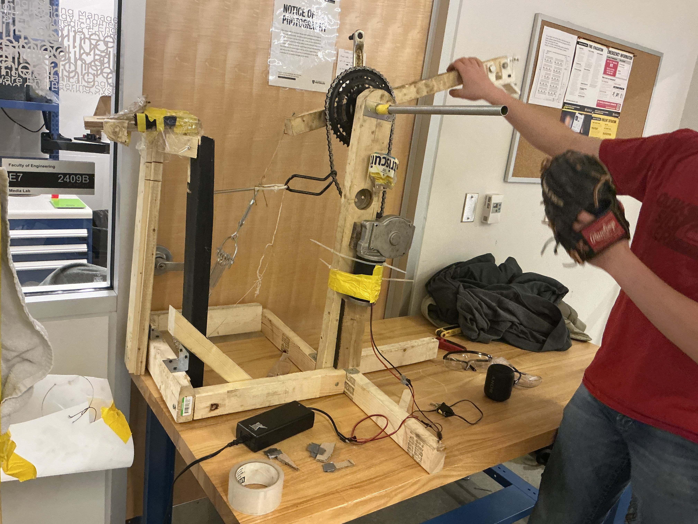
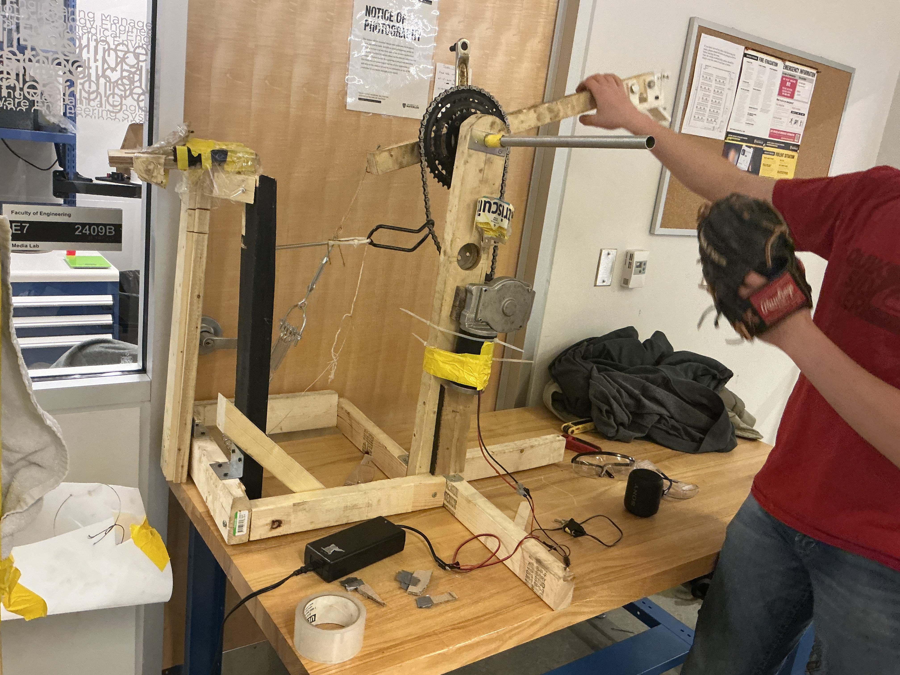
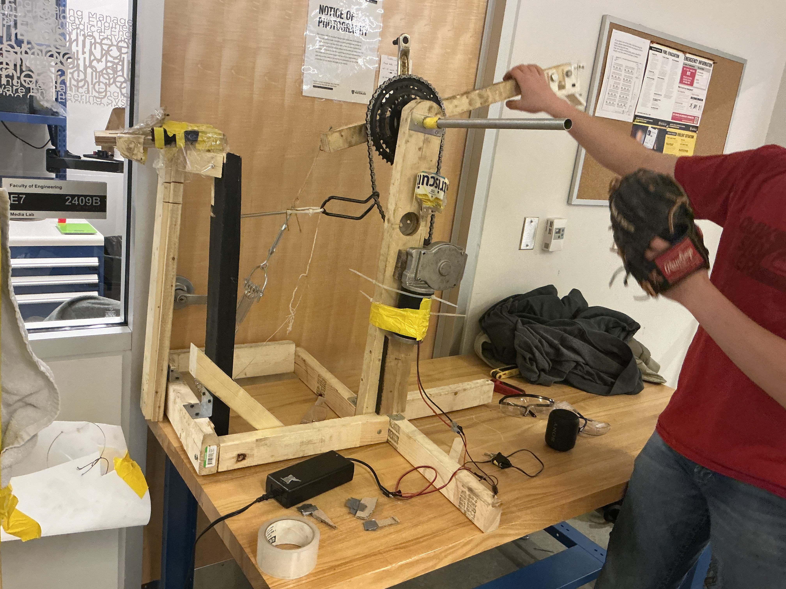

Using HTML/CSS, I wrote out six webpages to explain the concept of electromagnetic induction to high school and university-level students. These pages explain Faraday's and Lenz's Laws, describe their connection to Maxwell's equations and light waves, and provide example practice problems to test concepts. Original 3D animations, MathJax-rendered math, embedded YouTube videos, and carefully-selected external resource links make this website very informative for curious students. Additionally, basic cookies, a dark mode option, and interactive practice questions make it user-friendly.
Physics WebsiteAs a mechanical and HV team member, I contributed to the drivetrain and battery systems of our team's Hyperloop vehicle. We made a custom battery pack, onto which I installed a Daly charge monitor and a Daly active balancer. I tested discharging and charging of the battery using a protective relay while closely monitoring charge characteristics from the Daly unit and temperature readings from thermistors. Additionally, I machined four high-precision components for the lateral track guidance system.
For the ME 100 toy design project, our group set out to prototype a machine that could play a game of catch with the user. Footage of the final product was lost, but a clip of a late prototype version is shown below. The Fatherless Catch first receives a thrown ball by catching it with the net, funnelling the ball to a holder, and letting loose of a spring-driven arm that scoops up the ball and snaps forward, throwing the ball. The drivetrain consists of an AC/DC converter transforming 120V AC outlet potential into 12V DC with a maximum current of 10 amps. When switched on, it supplies the full 120W to the stepper motor which, along with a 4:1 bike chain gear reduction cranks the catapult back with an estimated torque of 16.3 N*m. I was responsible for soldering the drivetrain circuitry and helping to develop the chain gear reduction, frame, and mechanical joints in the machine.
I worked as a renovation contracter for over a year, helping my employer construct outdoor features like decks and patios, fences, stairs, and pavers. I learned to drill screws, demolish old concrete with a jackhammer, mix and handle concrete, sand surfaces, and do woodworking with many types of saws (e.g. table saw, mitre saw, circular saw, jigsaw).